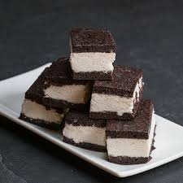

Home
Brownie Ice-cream Sandwich

Description
Baking off a pan of brownies and sandwiching your favorite ice cream between them is the easiest way to have a frozen treat ready to go all summer long. The classic pairing of a chocolate brownie and vanilla ice cream is hard to beat, but just about any ice cream would be good here.
Ingredients
- 1(16-oz.) box brownie mix, plus ingredients called for on box
- 2 cupsvanilla ice cream, softened
Steps
- Preheat oven to 350°. Line a 13" x 9" baking pan with parchment, leaving an overhang on 2 long opposite sides. Grease with cooking spray. In a large bowl, prepare brownie batter according to package directions. Pour into prepared pan; spread in an even layer.
- Bake brownies until a tester inserted into the center comes out with a few moist crumbs attached, 20 to 24 minutes. Let cool.
- Using parchment overhang, remove brownies from pan. Line same pan with parchment, leaving an overhang on 2 long opposite sides.
- Cut brownie in half and freeze until ready to serve, at least 2 hours or up to 1 month.
- Using parchment overhang, lift sandwiches out of pan. Serve immediately or return to freezer.